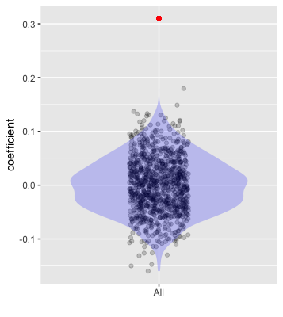

lm(height ~ mother, data = Galton) %>% regression_summary()| term | estimate | std.error | statistic | p.value |
|---|---|---|---|---|
| (Intercept) | 46.6907659 | 3.2587355 | 14.327879 | 0 |
| mother | 0.3131795 | 0.0508178 | 6.162793 | 0 |
\[\newcommand{\Ptest}{\mathbb{P}} \newcommand{\Ntest}{\mathbb{N}} \newcommand{\given}{\ |\!\!|\ }\]
This Lesson continues the discussion of Null hypothesis testing (NHP) started in Lesson 36. Recall from that lesson that the Null hypothesis is a statement in line with the claim that “there is no relationship between these variables” or “nothing is going on.” For example, in a study about the effectiveness of a new drug, the Null hypothesis will be that the drug has no effect at all. Another example: In an economics study about the possible relationship between a country’s “corruption index” and interest rates, the Null hypothesis would be “corruption is unrelated to interest rates.”
The work that precedes an NHP involves acquiring data, modeling it in a way that illuminates the relationship of interest, then summarizing that model. Often, the summary takes the form of a model coefficient, but it might be the model’s R2 or the incremental R2 from a nested set of models. (See Section 29.5.) Whatever the details, we will call the summary \(\mathbb{Sreal}\).
The primary calculation of an NHP, described in Section 36.4, is to generate simulated data frames, each involving shuffling to annul the relationship of interest. Then, model and summarize the simulated data frames in exactly the same way as for the actual data. The result for the first simulated data frame is \(\mathbb{Snull}_1\), for the second \(\mathbb{Snull}_2\), and up to, say, \(\mathbb{Snull}_{1000}\).
At this point, there are 1001 summaries: one \(\mathbb{Sreal}\) and 1000 \(\mathbb{Snull}_i\), where \(i=1, 2, \ldots, 1000\). These become the raw material for calculating numerical culmination of the NHT: the p-value.
Figure 36.3 (reproduced in the margin) shows an example of the raw material: 1000 values of \(\mathbb{Snull}_i\) and the single, unique value of \(\mathbb{Sreal}\) from the model lm(height ~ mother, data=Galton).
knitr::include_graphics("www/fig-shuffle-mother.png")
The p-value comes from the fraction of the \(\mathbb{Snull}_i\) that are larger in value than the \(\mathbb{Sreal}\). In Figure 36.3, none of the 1000 \(\mathbb{Snull}\) are larger than \(\mathbb{Sreal}\). Therefore, we write \(p < 1/1000\) or \(p < 0.001\).
The p-value is the final result of an NHT. TALK ABOUT how to write about the p-value LATER ON.
NHT is such a popular technique that statistical software will find the p-values from regression models for you. Consequently, in practice the shuffling technique is reserved for more specialized situations. For these Lessons, the specialized “situation” is pedagogical; we are trying to help you understand the concept of p-values and shuffling provides a concrete way to do this. In most modeling work, however, pedagogy is not an issue. So expect to use software to calculate p-values.
The p-value software we use in these Lessons is the two summary functions, regression_summary() and anova_summary().
lm(height ~ mother, data = Galton) %>% regression_summary()| term | estimate | std.error | statistic | p.value |
|---|---|---|---|---|
| (Intercept) | 46.6907659 | 3.2587355 | 14.327879 | 0 |
| mother | 0.3131795 | 0.0508178 | 6.162793 | 0 |
The regression model height ~ mother has two coefficients (the “estimate” column from regression_summary()). Insofar as our concern is the relationship between child’s height and mother, only the p-value for mother is of interest.
In these Lessons, we use the regression_summary() and anova_summary() R functions to calculate p-values from models. These two functions come from the {math300} package, which was written specially for these Lessons. In standard R, the equivalents are summary() and anova().
In fact, regression_summary() and anova_summary() are merely wrappers around summary() and anova(). The wrappers make sure that the output is in the form of a data frame and therefore suitable for data wrangling. The output from summary() and anova(), however, are not in a data-frame format.
When the p-value is small, the likelihood of \(\mathbb{Sreal}\) under the Null hypothesis, that is, \({\cal L}_{\mathbb{Sreal}}(\text{Null hypothesis})\) is also small. A small likelihood of a given hypothesis means that the hypothesis is not a compelling explanation for the observed \(\mathbb{Sreal}\).
There is a formal vocabulary for NHT. Instead of saying, casually, “The Null hypothesis is not a compelling explanation for \(\mathbb{Sreal}\), the formal NHT statement is,”The Null hypothesis is rejected.”
Commonly, the threshold 0.05 is given as the numerical definition of “small” in “small likelihood.” For example, the p-value on the mother coefficient in the model lm(height ~ mother, data=Galton) is \(p < 0.01\). This is obviously less than 0.05, so the outcome of the NHT is to “reject the Null hypothesis.”
Suppose, on the other hand, that the p-value had been “large,” that is \(0.05 < p\). What phrase should we use to summarize this situation. It is tempting—but wrong—to think that this leads to “accepting” the Null hypothesis. Instead the proper NHT phrase to use is “fail to reject the Null.”
We will return in Lesson 38 to the question of whether 0.05 is a good threshold to use. That’s part of a broader controversy.
Another part of the NHT formal vocabulary is the phrase “statistically significant.” In the everyday sense of the word, “significant” suggests “important,”, “worthy of attention,” or “noteworthy.” In NHT speak, “statistically significant” is a synonym for “reject the Null.” The NHT meaning of “statistically significant” has nothing at all to do with utility of the result.
Different fields have different standards for defining small. For instance, it’s common in psychology to consider \(p < 0.10\) as fairly small, while in physics, “small” means perhaps \(p < 0.001\) or even \(p < 0.000001\).
It may seem odd that there is no universal agreement about “small.” The reason is that p-values are part of a standard operating procedure for evaluating research results to know if they are worthy of publication.
In physics, laws and models are meant to be exact or close to exact. Lord Rutherford (1871-1935), an important physicist who won the Nobel prize in 1908, famously disparaged the use of statistics, reportedly saying, “If your experiment needs statistics, you should have done a better experiment.” This was in an era where the p-value standard operating procedure had not yet been invented. Today, when p-values are common in most fields, Rutherford’s distaste for statistical method is reflected in p-value thresholds like \(p < 0.000001\).
In other fields such as economics or psychology or clinical medicine, models are sought that are useful but without any expectation that they be exact. (In the 19th and early 20th century, psychologists and economists sometimes used the vocabulary of “law” to describe their findings, but “model” is more appropriate, because, unlike physics, the laws are not strictly enforced!) Often, in economics or psychology or medicine, the size of a sample used to train a model is less than, say, \(n=100\). And the units of observation—people or countries, for instance—are different one from the other, quite unlike, say, electrons, which are all the same. Consequently, sampling variation is often an important source of noise, obscuring relationships or even suggesting relationships that are not really there. (See Lesson 31.) This situation—small sample size, variation in observational units, and large sampling variation—would cause many useful findings to go unreported, as would happen if \(p < 0.000001\) were the standard. So a less stringent threshold for publication is used, most commonly 0.05.
For any regression model, the “regression report” contains one row for every coefficient for the model. Each of these rows will have a coefficient value (“estimate”) and a p-value. There are two additional columns: a standard error for the coefficient (“std.error”) and a value (labeled “statistic”) that is always just the estimate divided by the standard error.
The idea of the standard error was introduced in Lesson 23 (Section 23.1). The point of the standard error is to summarize the amount of sampling variation in the coefficient. But we standardized on the confidence interval format to summarize sampling variation.
Many statisticians think there is little point to calculating a p-value on a model coefficient because the confidence interval contains all the information needed. Importantly, model coefficients and their confidence intervals come with units; the units are the connection between the number and the real world. P-values are without units, and their value depends strongly on the sample size. Thus, they mix together relevant information about the magnitude of the effect and incidental information about the size of the sample used for training.
[[Say how a model coefficient is different from a set of terms. The question is whether the new term adds information on top of the existing terms. ]]
Sometimes the interest is more general: Do any of these terms contribute to explaining variation in the response variable? In such situations, the appropriate p-value is one that compares one model to another. This style of p-value—not on the individual coefficients but on model terms—comes from a calculation called “analysis of variance.”
Statistics textbooks usually include several different settings for “hypothesis tests.” I’ve just pulled a best-selling book off my shelf and find listed the following tests spread across eight chapters occupying about 250 pages.
As statistics developed, early in the 20th century, distinct tests were developed for different kinds of situations. Each such test was given its own name, for example, a “t-test” or a “chi-squared test.” Honoring this history, statistics textbooks present hypothesis testing as if each test were a new and novel kind of animal.
In fact, almost all the different tests named in introductory statistics books are really just different manifestations of regression. Regression is to “animal” the way t-test is to “elephant.” An important theme in the history of statistics is that out of the diversity of statistical methods, almost all of them are encompassed by one method: regression modeling.
In these Lessons, we’ve focussed on that one method, rather than introducing all sorts of different formulas and calculations which, in the end, are just special cases of regression. Nonetheless, most people who are taught statistics were never told that the different methods fit into a single unified framework. Consequently, they use different names for the different methods. Communicating in a world where people learned the traditional names, you have to be able to recognize those names know which regression model they refer to. In the table below, we will use different letters to refer to different kinds of explanatory and response variables.
x and y: quantitative variables
group: a categorical variable with multiple (\(\geq 3\)) levels.
yesno: a categorical variable with exactly two levels (which can always be encoded as a zero-one quantitative variable)
| Model formula | traditional name |
|---|---|
y ~ 1 |
t-test on a single mean |
yesno ~ 1 |
p-test on a single proportion. |
y ~ yesno |
t-test on the difference between two means |
yesno1 ~ yesno2 |
p-test on the difference between two proportions |
y ~ x |
t-test on a slope |
y ~ group |
ANOVA test on the difference among the means of multiple groups |
y ~ group1 * group2 |
Two-way ANOVA |
y ~ x * yesno |
t-test on the difference between two slopes. (Note the *, indicating interaction) |
Another named test, the z-test, is a special kind of t-test where you know the variance of a variable without having to calculate it from data. This situation hardly every arises in practice, and mostly it is used as a soft introduction to the t-test.
Use cancer/grass-treatment example from Lesson 30 to illustrate how failing to think about covariates before the study analysis can lead to false discovery.
Use age in marriage data.
So, standard operating procedures were based on the tools at hand. We will return to the mismatch between hypothesis testing and the contemporary world in Lesson 38.
\[ \begin{array}{cc|cc} & & \textbf{Test Conclusion} &\\ & & \text{do not reject } H_0 & \text{reject } H_0 \text{ in favor of }H_A \\ \textbf{Truth} & \hline H_0 \text{ true} & \text{Correct Decision} & \text{Type 1 Error} \\ & H_A \text{true} & \text{Type 2 Error} & \text{Correct Decision} \\ \end{array} \]
A Type 1 error, also called a false positive, is rejecting the null hypothesis when \(H_0\) is actually true. Since we rejected the null hypothesis in the gender discrimination (from the Case Study) and the commercial length studies, it is possible that we made a Type 1 error in one or both of those studies. A Type 2 error, also called a false negative, is failing to reject the null hypothesis when the alternative is actually true. A Type 2 error was not possible in the gender discrimination or commercial length studies because we rejected the null hypothesis.
Most statistics books include two versions of a test invented around 1900 that deals with counts at different levels of a categorical variable. This chi-squared test is genuinely different from regression. And, in theoretical statistics the chi-squared distribution has an important role to play.
The chi-squared test of independence could be written, in regression notation, as group1 ~ group2. But regression does not handle the case of a categorical variable with multiple levels.
However, in practice the chi-squared test of independence is very hard to interpret except when one or both of the variables has two levels. This is because there is nothing analogous to model coefficients or effect size that comes from the chi-squared test.
The tendency in research, even when group1 has more than two levels, is to combine groups to produce a yesno variable. Chi-squared can be used with the response variable being yesno and almost all textbook examples are of this nature.
But for a yesno response variable, a superior, more flexible and more informative method is logistic regression.
ANOVA, which is always a comparison of two models, say y~1 versus y~group involves something called an F-test. For the simpler setting of the t-test, the model y~yesno, an F-test can also be done. Which to do, t or F? It turns out that t2 is exactly the same as F.